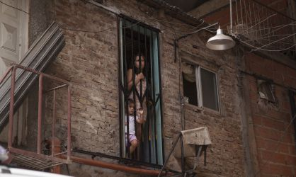

Es casi imposible no verla, pero algunos lo logran. En el corazón de Buenos Aires, a 200 metros del barrio más caro de la capital argentina y un centro comercial de lujo, resiste dictaduras, crisis, recuperaciones y recaídas. Está allí como un recuerdo permanente de que estamos en Latinoamérica, por mucho que algunos barrios chic de Buenos Aires quieran desmentirlo. Es la Villa 31, incrustada entre el tren y la autopista, más viva que nunca. Nadie pudo acabar con ella. Ahora se intenta disimular. El ayuntamiento ha colocado vallas, mallas de metal y plantas para separar la autopista de la villa. En teoría, se pretende proteger a los vecinos y evitar que las casas literalmente se monten sobre los coches. Pero muchos, abajo, creen que quieren aislarles y conseguir que los automovilistas no les vean. Es casi imposible, la villa es enorme. Pero algo tapa.
La 31 ha doblado su población en la última década. Ya viven allí entre 40.000 y 50.000 personas. Nadie lo sabe con certeza. Pero mientras arriba, en la autopista, la villa se difumina, abajo la realidad es cada día más dura. Una guerra entre bandas narco, peruanos contra paraguayos, ha dejado cinco muertos en un mes, el último de solo 14 años. Un récord incluso para esta zona donde el asesinato no es algo raro, aunque siempre fue más tranquila que la 1-11-14, la villa más dura. “La situación está al rojo vivo. Los narcos quieren marcar territorio ahora que entra un Gobierno nuevo. Y mientras aquí abajo perdemos a nuestro chicos adictos al paco [pasta base de cocaína], que mezclan con silacina, una droga para caballos, allí arriba tratan de hacer un bosque para que desde la autopista no se vea nuestra pobreza. Quieren tapar el sol con un dedo”, se lamenta Jorge, que lleva 40 años viviendo en la villa, tiene dos hijos drogadictos y con su organización “Sí a la vida” trata de sacar a niños de la droga.
La ciudad de la que fue alcalde Mauricio Macri ocho años y que ahora dirige su mano derecha, Horacio Rodríguez Larreta, tiene planes para la Villa 31. Un proyecto de integración en la ciudad que promete ser uno de los hitos de su gestión. Diego Fernández, secretario de integración urbana y social de la Ciudad de Buenos Aires, rechaza cualquier crítica las plantas que desde la autopista tratan de cubrir la villa. “La ciudad no tiene ninguna voluntad de ocultar la villa 31 sino de integrarla”, asegura. Es cierto que es imposible esconderla, y las plantas no lo logran. Fernández asegura que todo se hizo con consenso de los vecinos, hartos de que les cayera de todo desde la autopista. Entre la malla de metal asoman ya nuevas construcciones y antenas de televisión. Los coches pasan a dos metros de la puerta de un baño donde la intimidad es una quimera.